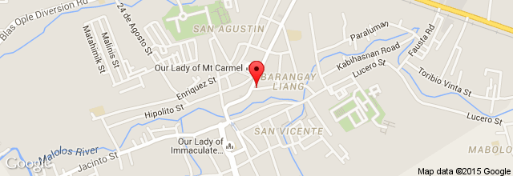
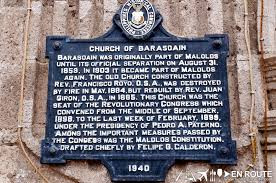

How to get there?
 
From that point, just go straight until you reach the Malolos fly over. DO NOT use the fly over. Drive under the fly over to reach Malolos crossing. Turn left afterwards. Go straight and you will see Barasoain church at the right side. That’s how you get to barasoain church. If you're from Bulacan, you need to ride a jeepney with a signboard "Malolos Bayan" or "Crossing" and stop in the Malolos Capitol and you need to ride again a Jeepney with a sign board of “Derecho”, “Derecho Bayan” or “Karatig.” Or simply ask the traffic enforcer in Malolos crossing about the Jeepney to ride going to Barasoain church. The fare is P8.50. You can also ride a tricycle however, it is not recommended since the fare is much higher.